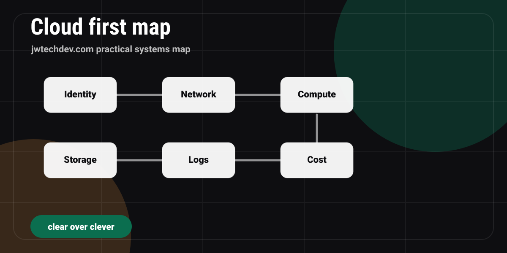

What should a beginner learn first in cloud infrastructure?
A practical cloud infrastructure learning path for beginners: identity, networking, compute, storage, monitoring, cost, and one portfolio project.

Quick answer
A beginner should learn cloud infrastructure by understanding six categories first: identity, networking, compute, storage, monitoring, and cost. After that, map AWS services into those categories and build one small project that proves the concepts.
The beginner mistake
Most beginners start cloud infrastructure by collecting service names. EC2, S3, Lambda, VPC, IAM, CloudWatch, DynamoDB, Route 53, and on and on. That feels productive because the vocabulary is real, but it does not create understanding by itself.
The better first move is to learn what problem each infrastructure category solves. Once you understand the category, the service names have a place to land. IAM is not just another AWS acronym. It belongs to identity. VPC is not random. It belongs to networking. CloudWatch is not trivia. It belongs to monitoring and observability.
The six categories to learn first
Identity
Who can do what. Learn users, roles, policies, permission boundaries, and why least privilege matters.
Networking
What can talk to what. Learn public and private paths, subnets, routing, security groups, and DNS.
Compute
Where code runs. Learn servers, containers, functions, scaling, and the tradeoff between control and convenience.
Storage
Where data lives. Learn object storage, block storage, databases, backups, retention, and access patterns.
Monitoring
How you know what happened. Learn logs, metrics, alerts, dashboards, traces, and incident review.
Cost
How you avoid surprise bills. Learn budgets, tags, lifecycle rules, right-sizing, and what makes workloads expensive.
How to connect the map to AWS
After the category map is clear, AWS services become easier to place. IAM belongs to identity. VPC, subnets, route tables, security groups, and Route 53 belong to networking. EC2, Lambda, ECS, and EKS belong to compute. S3, EBS, EFS, RDS, and DynamoDB belong to storage. CloudWatch and CloudTrail help you understand what happened. AWS Budgets and Cost Explorer help you control spend.
The point is not to memorize every service. The point is to be able to explain why a service exists, when you would use it, and what risk it introduces.
Build one project while learning
The fastest way to make cloud learning real is to pair the categories with one finished portfolio project. A strong beginner project can be simple: a static site, a contact form architecture plan, a private notes app diagram, or a small serverless API.
For each project, write down the identity model, network path, compute layer, storage layer, monitoring plan, and cost guardrail. That explanation is often more valuable than a huge project that nobody can understand.
Where AI changes the learning path
AI tools can help explain errors, generate diagrams, review code, and create study drills. They do not remove the need for infrastructure judgment. AI workflows still need permissions, logs, storage, routing, review, and rollback plans.
That is why cloud infrastructure remains useful even in an AI-heavy world. The prompt may start the workflow, but infrastructure determines whether the workflow is safe, repeatable, and recoverable.
Pick your next study move
Choose the sentence that sounds most like you.
Cloud beginner checklist
0 of 6 checkedFAQ
Should I learn AWS, Azure, or Google Cloud first?
Start with one platform deeply enough to build and explain projects. AWS is a strong first choice because the ecosystem is large, but the category map transfers across clouds.
Do I need to code before learning cloud infrastructure?
You do not need to be an advanced programmer, but basic scripting, command line comfort, and Git will make cloud projects much easier.
What is the best first cloud project?
A static website with a clear deployment path and a written architecture explanation is a strong first project because it teaches deployment, ownership, DNS, and documentation.
Want the working resource?
Request the Cloud Infrastructure First Map and use it to turn the six categories into your first clean portfolio project.
Request access